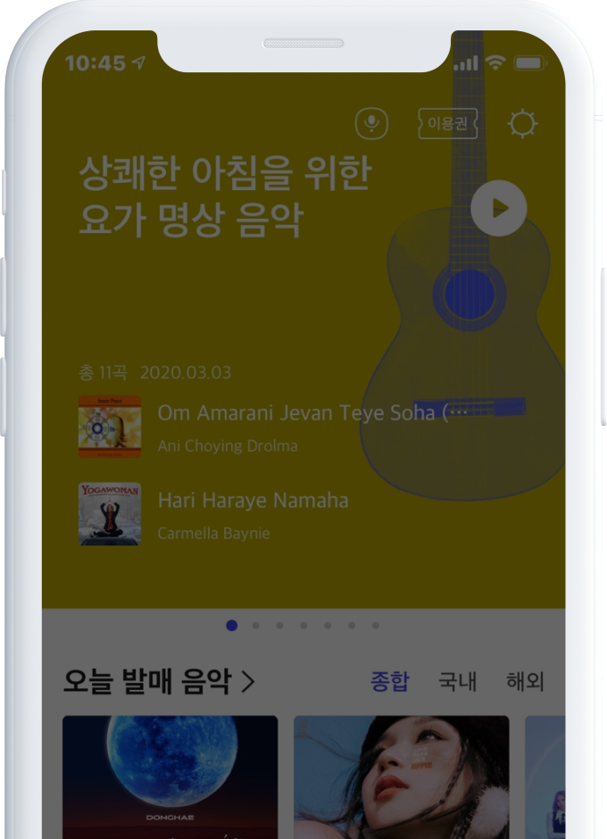
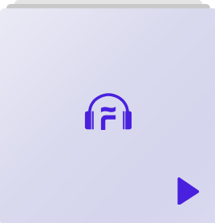
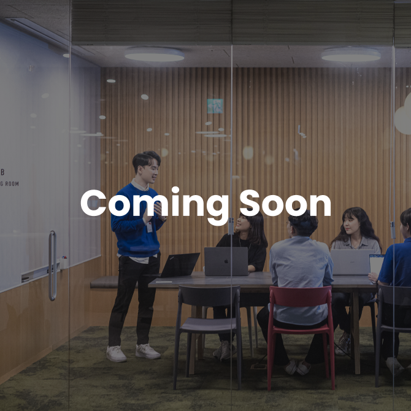

플로에서 일해봐!
전 직군 경력직 채용
#조직문화직급 없이
영어닉네임
영어닉네임
#복리후생2021년 1,2분기
흑자 달성
흑자 달성
#복리후생3년간 2,000억원
투자 확정
투자 확정
#조직문화성장 지향적인
개발 문화
개발 문화
#복리후생매년 150% 이상
확충되는 복리후생
확충되는 복리후생
#연봉인상연중, 연봉 500만원
깜짝 추가 인상
깜짝 추가 인상
#근무환경업계 최상급
워라밸
워라밸
#조직문화빌런 없는 조직
#근무환경전사 재택근무
벌써 2년차
벌써 2년차
#근무환경코어타임 없는
완전 선택 근무제
완전 선택 근무제
지금까지 쉬지 않고
열심히 일한 당신
첫 달은 월급 받으면서
마음껏 쉬고 오세요!
FLO가 휴가지원금
500만원도
드립니다.
SPECIAL BENEFIT
SPECIAL BENEFIT
SPECIAL BENEFIT
SPECIAL BENEFIT
SPECIAL BENEFIT
SPECIAL BENEFIT
SPECIAL BENEFIT
SPECIAL BENEFIT
SPECIAL BENEFIT
SPECIAL BENEFIT
SPECIAL BENEFIT
SPECIAL BENEFIT
SPECIAL BENEFIT
SPECIAL BENEFIT
SPECIAL BENEFIT
SPECIAL BENEFIT
SPECIAL BENEFIT
SPECIAL BENEFIT
SPECIAL BENEFIT
SPECIAL BENEFIT
SPECIAL BENEFIT
SPECIAL BENEFIT
SPECIAL BENEFIT
SPECIAL BENEFIT
SPECIAL BENEFIT
SPECIAL BENEFIT
SPECIAL BENEFIT
SPECIAL BENEFIT
SPECIAL BENEFIT
SPECIAL BENEFIT
모든 입사자에게 입사 시
첫 1개월 유급휴가 &
500만원 사이닝보너스 지급!
FLO는 Level-up 중!
음악플랫폼 변화의 중심에는 FLO가 있습니다.
이제 음악 뿐만 아니라 콘텐츠의 경계를 넘어
No.1 오디오 콘텐츠 플랫폼으로 도약합니다.
2018년 런칭 후,
유료 청취량
2년간 연평균 87% 성장
2021년
NCSI 음원서비스부문
고객만족도 1위 선정
1
2021년 700억 투자 유치,
2023년까지
2,000억 투자 확정!
2,000억
No.1 오디오 콘텐츠
플랫폼으로의 도전
2022년 FLO만의
'오디오 유니버스'를
만들기 위한
다양한 셀럽들과의 독점
오리지널 콘텐츠 공개 예정

Career Fast Track에
올라타다.
FLO와 함께 한 사람들
FLO에서 Career Jump한 구성원들의 이야기를
확인해보세요!


2021년 FLO에 합류한
구성원들의
솔직 담백한 입사 후기
No.1 오디오 콘텐츠
플랫폼을 향한
여정에 함께 할 다시는 없을 기회
지금 지원하세요!
모든 포지션은 채용 시 조기마감됩니다.
Career Fast Track에 올라타다
Career Playlist
2022년,
더 확대 될
복리후생
= 현 기준 + Alpha!
원하는 시간대에 일하는 선택적 근무 시간제
2주간 80시간만 근무하면 연차 사용 없이 Off –
코로나 이후 계속 전사 재택근무,
코로나 끝나도 주 2회
연차 다 써도 휴가 추가 지급, The Dream 휴가
명절 전 반일근무, 결혼하면 2주 장기 휴가 등 제공
더 자율적으로
매년 100만원 상당의 복지포인트 지급
매월 SKT 통신비 4만원 지원
사내 주택자금 대출 지원
연1회 20만원 상당 본인 및 배우자 건강검진 지원
가족의 건강까지, 단체상해보험
경조사 지원 / 장기근속 포상 / 리조트 할인 등등
더 실용적으로

최근 3개년 평균,
매년 150% 이상 확충되고 있는 복리후생
2022년 복리후생은 현 기준 + Alpha,
변화할 복리후생을 기대해주세요!
FLO에서만 가능한 선택,
한 달 휴식과 함께
새로운 여정을 시작해보세요!
FLO가
당신을 기다립니다.